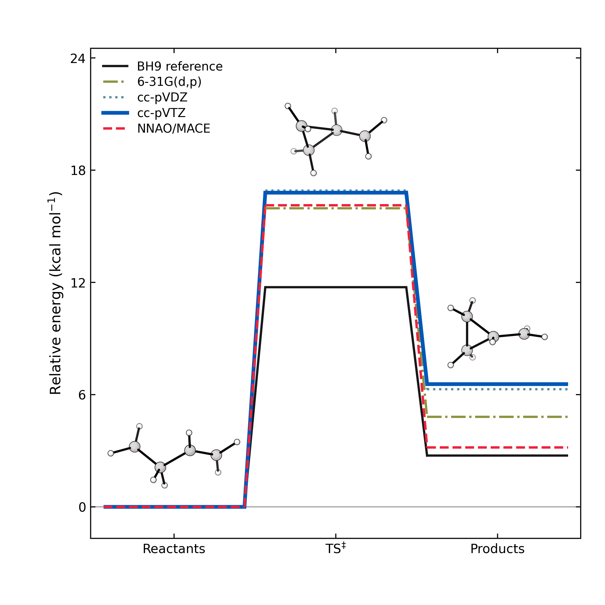
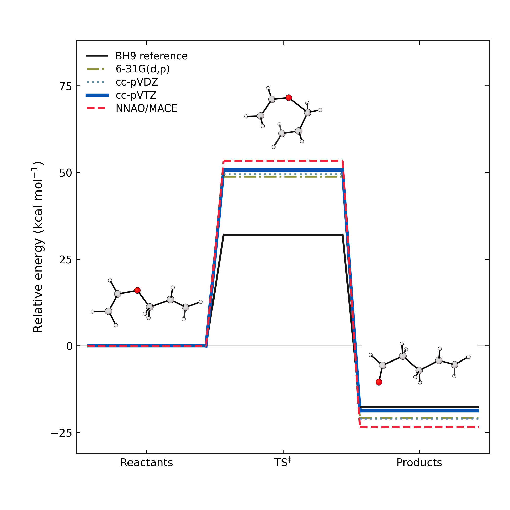
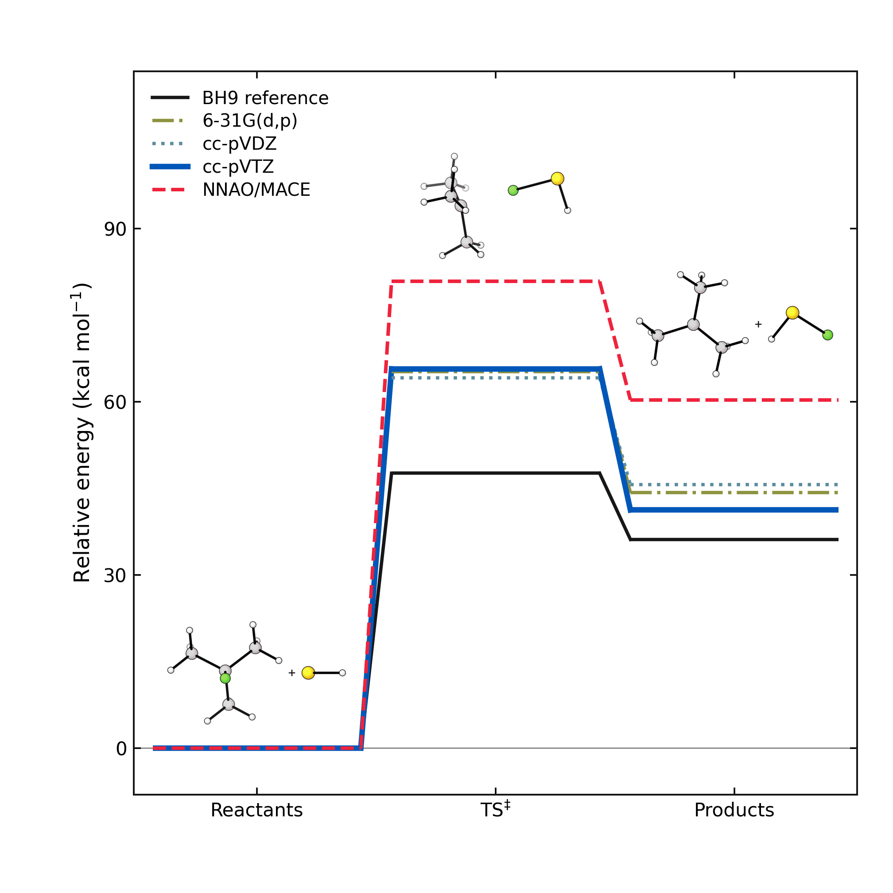
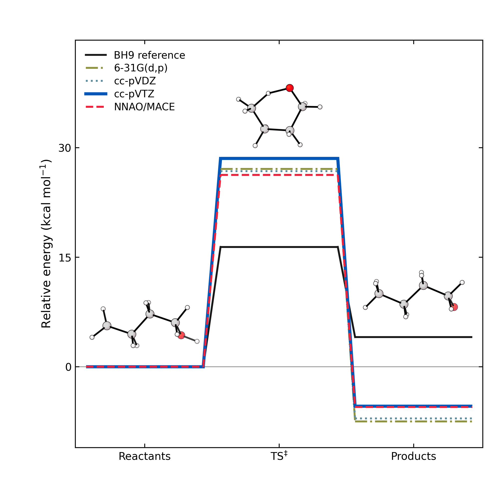
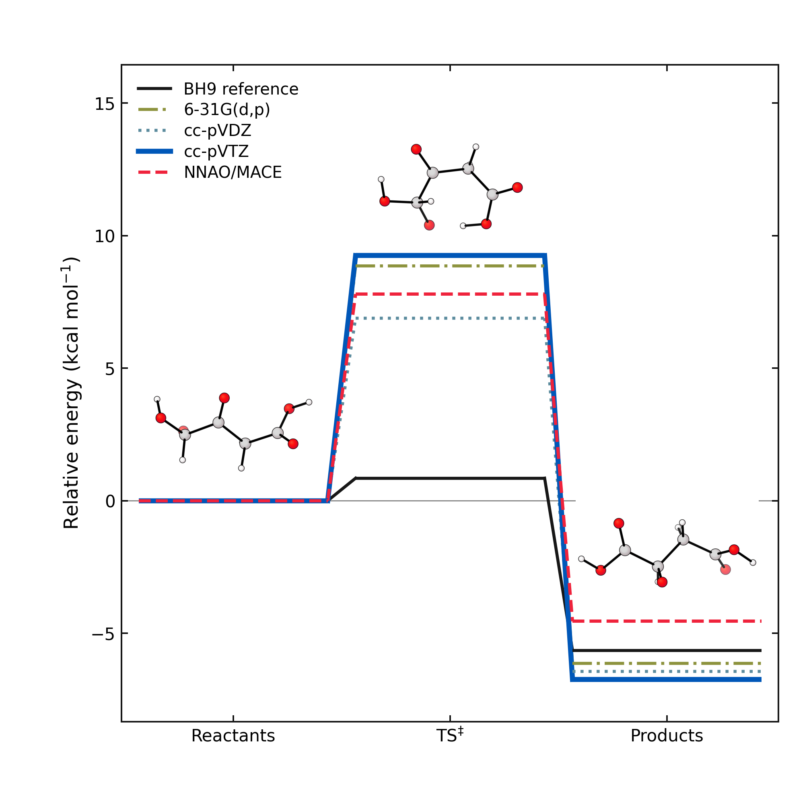
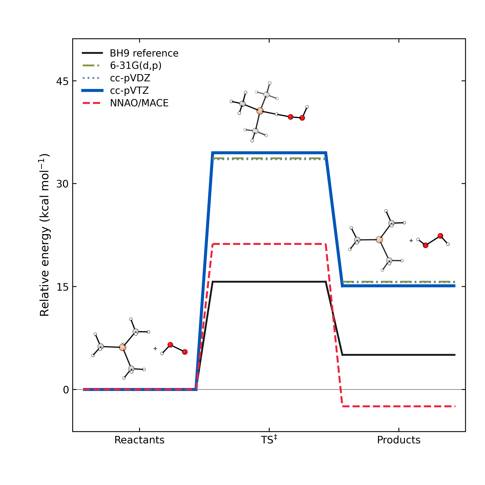
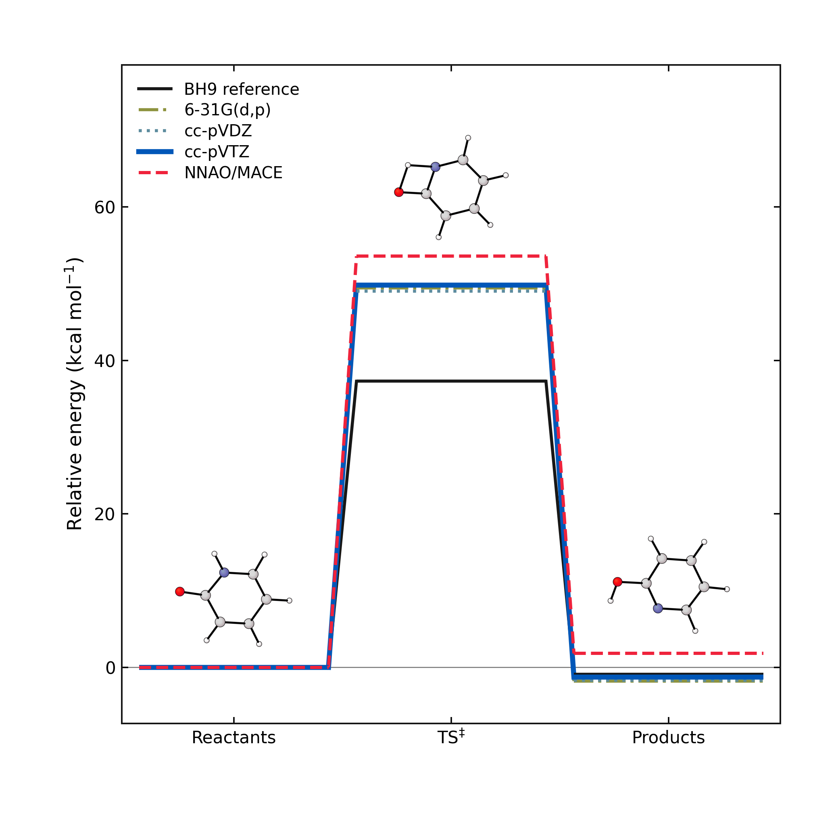
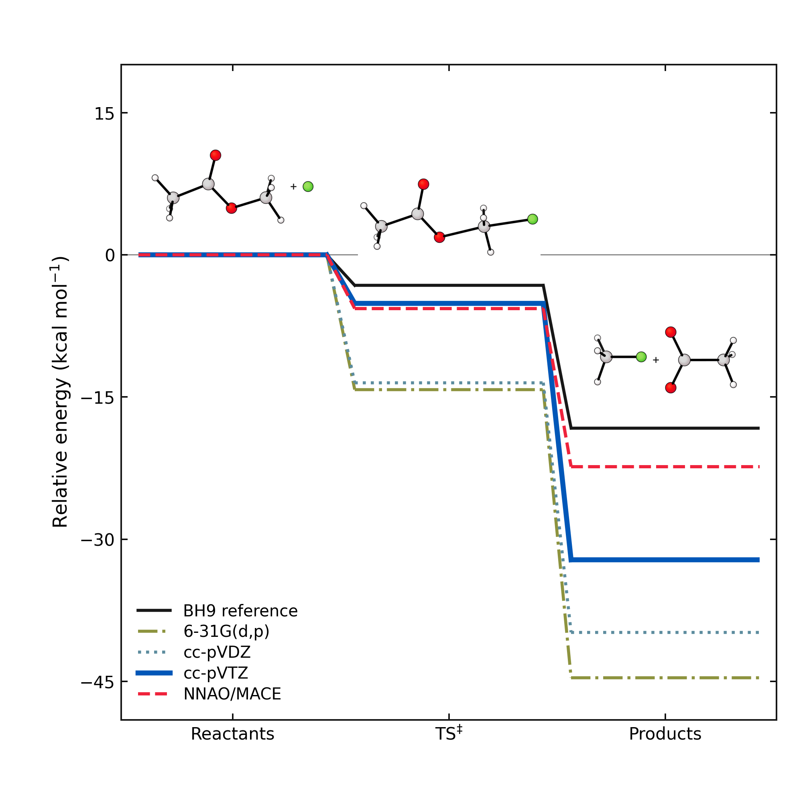
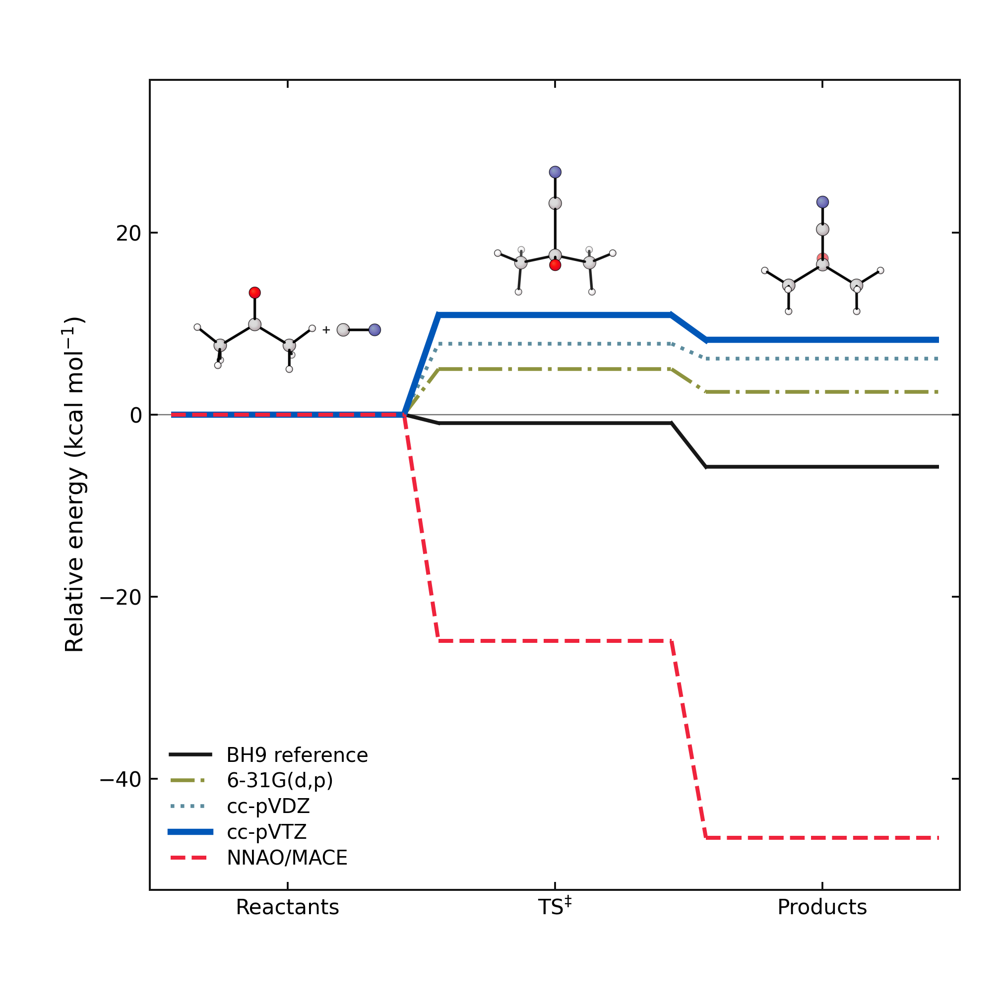

Nine individual reactions; archived DF-HF data and published BH9 reference values. Connectors are schematic, not IRC paths. Each method uses its own reactant zero. Molecular panels reuse the archived xyzrender views; separate species remain separate.
All nine reactions (PDF) | Overview | Plotted energy levels








